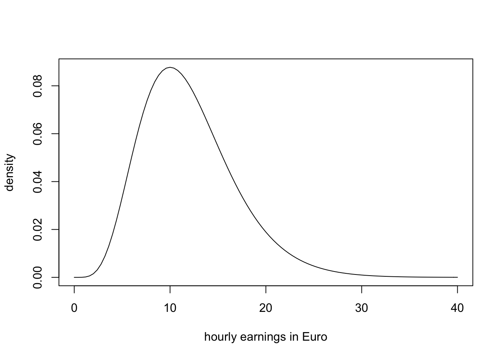
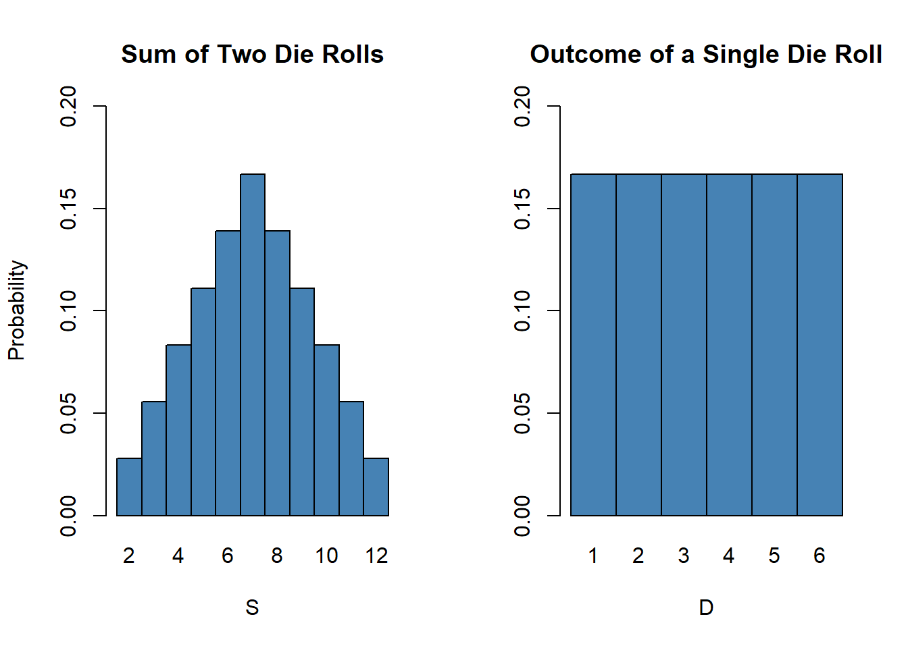
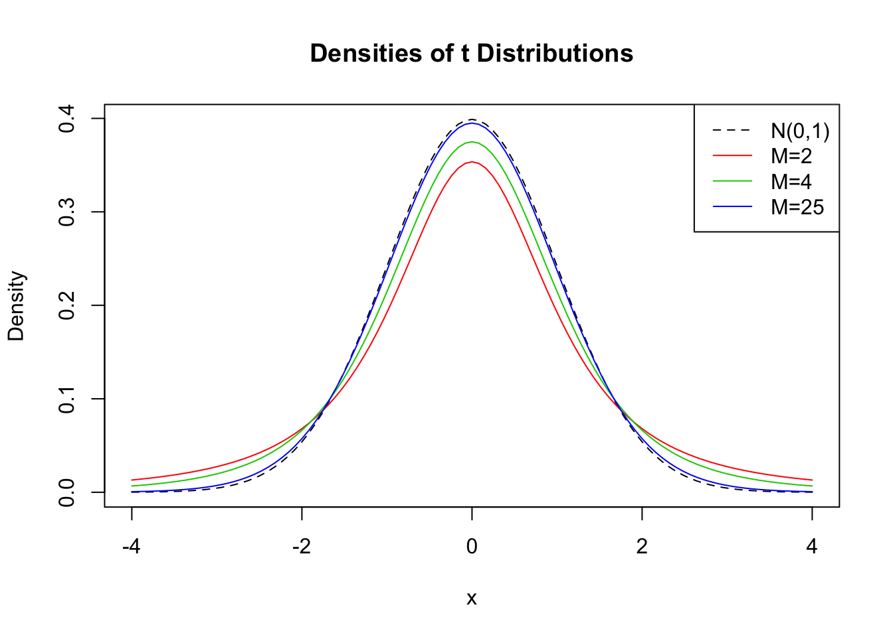
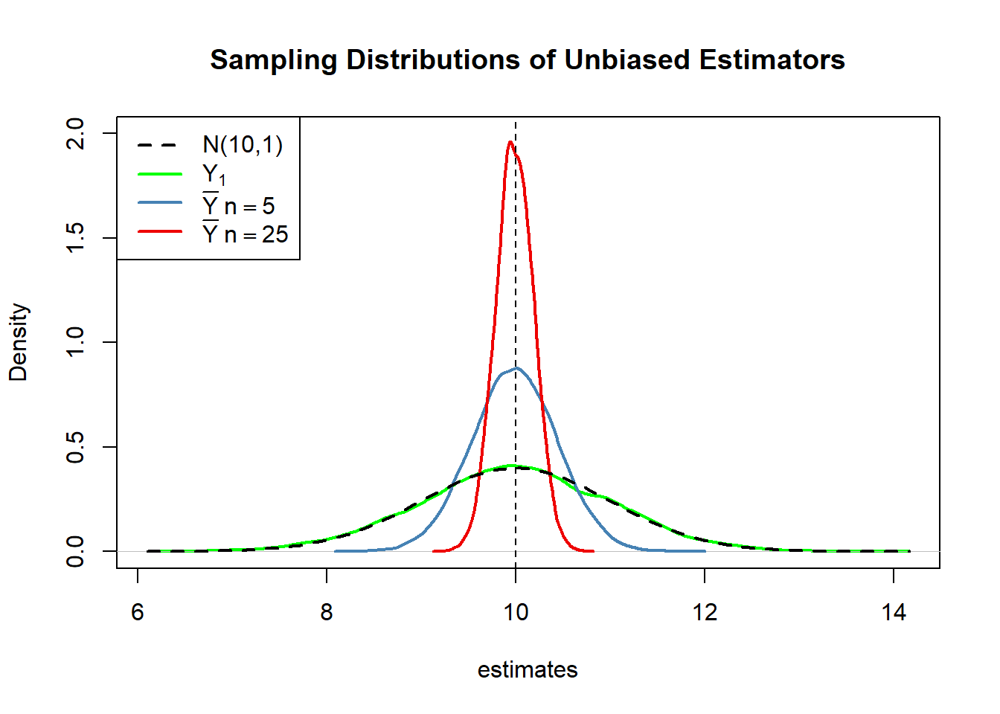

3 A Review of Statistics using R
This section reviews important statistical concepts:
Estimation
Hypothesis testing
Confidence intervals
Since these types of statistical methods are heavily used in econometrics, we will discuss them in the context of inference about an unknown population mean and discuss several applications in R.
Estimation of the Population Mean
Key Concept 3.1
Estimators and Estimates
Estimators are functions of sample data that are drawn randomly from an unknown population. Estimates are numerical values computed by estimators based on the sample data. Estimators are random variables because they are functions of random data. Estimates are nonrandom numbers.
Think of some economic variable, for example hourly earnings of college graduates, denoted by \(Y\). Suppose we are interested in \(\mu_Y\) the mean of \(Y\). In order to exactly calculate \(\mu_Y\) we would have to interview every graduated member of the working population in the economy. We simply cannot do this for time and cost reasons. However, we could draw a random sample from \(n\) i.i.d. observations \(Y_1, \dots, Y_n\) and estimate \(\mu_Y\) using one of the simplest estimators in the sense of Key Concept 3.1 one can think of:
\[ \overline{Y} = \frac{1}{n} \sum_{i=1}^n Y_i, \]
the sample mean of \(Y\). Then again, we could use an even simpler estimator for \(\mu_Y\): the very first observation in the sample, \(Y_1\). Is \(Y_1\) a good estimator? For now, assume that
\[ Y \sim \chi_{12}^2 \]
which is not too unreasonable as the measure is nonnegative and we expect many hourly earnings to be in a range of \(5€\) to \(15€\). Moreover, it is common for income distributions to be skewed to the right.
# plot the chi_12^2 distribution
curve(dchisq(x, df=12),
from = 0,
to = 40,
ylab = "density",
xlab = "hourly earnings in Euro"
)
We draw a sample of \(n=100\) observations and take the first observation \(Y_1\) as an estimate for \(\mu_Y\)
# set seed for reproducibility
set.seed(1)
# sample from the chi_12^2 distribution, keep only the first observation
rchisq(n = 100, df = 12)[1]## [1] 8.257893The estimate \(8.26\) is not too far away from \(\mu_Y = 12\) but it is somewhat intuitive that we could do better: the estimator \(Y_1\) discards a lot of information and its variance is the population variance:
\[ \text{Var}(Y_1) = \text{Var}(Y) = 2 \cdot 12 = 24 \]
This brings us to the following question: What is a ‘good’ estimator in the first place? This question is tackled in Key Concepts 3.2 and 3.3
Key Concept 3.2
Bias, Consistency and Efficiency
Disirable characteristics of an estimator are unbiasedness, consitency and Efficiency.
Unbiasedness:
If the mean of the sampling distribution of some estimator \(\hat\mu_Y\) for the population mean \(\mu_Y\) equals \(\mu_Y\) \[ E(\hat\mu_Y) = \mu_Y \] we say that the estimator is unbiased for \(\mu_Y\). The bias of \(\hat\mu_Y\) is \(0\):
\[ E(\hat\mu_Y) - \mu_Y = 0\]
Consistency:
We want the uncertainty of the estimator \(\mu_Y\) to decrease as the number of observations in the sample grows. More precisely, we want the proabability that the estimate \(\hat\mu_Y\) falls within a small interval of the true value \(\mu_Y\) to get increasingly closer to \(1\) as \(n\) grows. We write this as
\[ \hat\mu_Y \xrightarrow{p} \mu_Y. \]
Variance and efficiency:
We want the estimator to be efficient. Suppose we have two estimators, \(\hat\mu_Y\) and \(\overset{\sim}{\mu}_Y\) and for some given sample size \(n\) it holds that
\[ E(\hat\mu_Y) = E(\overset{\sim}{\mu}_Y) = \mu_Y \] but \[\text{Var}(\hat\mu_Y) < \text{Var}(\overset{\sim}{\mu}_Y).\]
We then would prefer to use \(\hat\mu_Y\) as it has a lower variance than \(\overset{\sim}{\mu}_Y\), meaning that \(\hat\mu_Y\) is more efficient in using the information provided by the observations in the sample.
Key Concept 3.3
Efficiency of \(\overline{Y}\): The BLUE property
Let \(\hat\mu_Y\) be a linear and unbiased estimator of \(\mu_Y\) in the fashion of
\[ \hat\mu_Y = \frac{1}{n} \sum_{i=1}^n a_i Y_i\]
with nonrandom constants \(a_i\). We see that \(\hat\mu_Y\) is a weighted average of the \(Y_i\) and the \(a_i\) are weights. For these type of estimators, \(\overline{Y}\) with \(a_i = 1\) for all \(i = 1, \dots, n\) is the most efficient estimator. We say that \(\overline{Y}\) is the BestLinear Unbiased Estimator (BLUE).
Properties of the Population Mean
To examine properties of the sample mean as an estimator for the corresponding population mean, consider the following R example.
We generate a population pop which consists observations \(Y_i \ , \ i=1,\dots,10000\) that stem from a normal distribution with mean \(\mu = 10\) and variance \(\sigma^2 = 1\).
To investigate how the estimator \(\hat{\mu} = \bar{Y}\) behaves we can draw random samples from this population and calculate \(\bar{Y}\) for each of them. This is easily done by making use of the function replicate(). Its argument expr is evaluated n times. In this case we draw samples of sizes \(n=5\) and \(n=25\), compute the sample means and repeat this exactly \(n=25000\) times.
For comparison purposes we store results for the estimator \(Y_1\), the first observation in a sample for a sample of size \(5\) separately.
# generate a fictive population
pop <- rnorm(10000, 10, 1)
# sample form pop and estimate the mean
est1 <- replicate(expr = mean(sample(x = pop, size = 5)), n = 25000)
est2 <- replicate(expr = mean(sample(x = pop, size = 25)), n = 25000)
fo <- replicate(expr = sample(x = pop, size = 5)[1], n = 25000)Check that est1 and est2 are vectors of length \(25000\):
# check if object type is vector
is.vector(est1)## [1] TRUEis.vector(est2)## [1] TRUE# check lengths
length(est1)## [1] 25000length(est2)## [1] 25000The code chunk below produces a plot of the sampling distributions of the estimators \(\bar{Y}\) and \(Y_1\) on the basis of the \(25000\) samples in each case. We also plot a curve depicting the density function of the \(N(10,1)\) distribution.
# plot density estimate Y_1
plot(density(fo),
col = 'green',
lwd = 2,
ylim = c(0,2),
xlab = 'estimates',
main = 'Sampling Distributions of Unbiased Estimators'
)
# add density estimate for the distribution of the sample mean with n=5 to the plot
lines(density(est1),
col = 'steelblue',
lwd = 2,
bty = 'l'
)
# add density estimate for the distribution of the sample mean with n=25 to the plot
lines(density(est2),
col = 'red2',
lwd = 2
)
# add a vertical line marking the true parameter
abline(v = 10, lty = 2)
# add N(10,1) density to the plot
curve(dnorm(x, mean=10),
lwd = 2,
lty = 2,
add = T
)
# add a legend
legend("topleft",
legend = c("N(10,1)",
expression(Y[1]),
expression(bar(Y) ~ n==5),
expression(bar(Y) ~ n==25)
),
lty = c(2, 1, 1, 1),
col = c('black','green', 'steelblue', 'red2'),
lwd = 2
)
At first, notice how all sampling distributions (represented by the solid lines) are centered around \(\mu = 10\). This is evidence for the unbiasedness of \(Y_1\) and \(\overline{Y}\). Of course, the theoretical density the \(N(10,1)\) distribution is centered at \(10\), too.
Next, have a look add the spread of the sampling distributions. Several things are remarkable:
First, the sampling distribution of \(Y_1\) (green curve) tracks the density of the \(N(10,1)\) distribution (black dashed line) pretty closely In fact, the sampling distribution of \(Y_1\) is the \(N(10,1)\) distribution. This is less surprising if You keep in mind that \(Y_1\) estimator does nothing but reporting an observation that is randomly selected from a population with \(N(10,1)\) distribution. Hence, \(Y_1 \sim N(10,1)\). Note that this result is invariant to the sample size \(n\): the sampling distribution of \(Y_1\) is always the population distribution, no how large the sample is.
Second, both sampling distributions of \(\overline{Y}\) show less dispersion than the sampling distribution of \(Y_1\). This means that \(\overline{Y}\) has a lower variance than \(Y_1\). In view of Key Concepts 3.2 and 3.3, we find that \(\overline{Y}\) is a more efficient estimator than \(Y_1\). In fact, one can show that this holds for all \(n>1\).
Third, \(\overline{Y}\) shows a behaviour that is termed consistency (see Key Concept 3.2). Notice that the blue and the red density curves are much more concentrated around \(\mu=10\) then the green one. As the number of observations is increased from \(1\) to \(5\), the sampling distribution tightens around the true parameter. This effect is more dominant as the sample size is increased to \(25\). This implies that the probability of obtaining estimates that are close to the true value increases with \(n\).
A more precise way to express consitency of an estimator \(\hat\mu\) for a parameter \(\mu\) is
\[ P(|\hat{\mu} - \mu|<\epsilon) \xrightarrow[n \rightarrow \infty]{p} 1 \quad \text{for any}\quad\epsilon>0.\]
This expression says that the probability of observing a deviation from the true value \(\mu\) that is smaller than some arbitrary \(\epsilon > 0\) converges to \(1\) as \(n\) grows.Note that consistency does not require unbiasedness:
We encourage You to go ahead and modify the code. Try out different values for the sample size and see how the sampling distribution of \(\overline{Y}\) changes!
\(\overline{Y}\) is the least squares estimator of \(\mu_Y\)
Assume You have some observations \(Y_1,\dots,Y_n\) on \(Y \sim N(10,1)\) (which is unknown) and would like to find an estimator \(m\) that predicts the observations as good as possible where good means to choose \(m\) such that the total deviation between the predicted value and the observed values is small. Mathematically this means we want to find an \(m\) that minimizes
\[\begin{equation} \sum_{i=1}^n (Y_i - m)^2. \tag{3.1} \end{equation}\]Think of \(Y_i - m\) as the comitted mistake when predicting \(Y_i\) by \(m\). We could just as well minimize the sum of absolute deviations from \(m\) but minimizing the sum of squared deviations is mathematically more convenient and leads, roughly speaking, to the same result. That is why the estimator we are looking for is called the least squares estimator. As It turns out \(m = \overline{Y}\), the estimator of \(\mu_Y=10\) is this wanted estimator.
We can show this by generating a random sample of fair size and plotting (3.1) as a function of \(m\).
# define the function and vectorize it
sqm <- function(m) {
sum((y-m)^2)
}
sqm <- Vectorize(sqm)
# draw random sample and compute the mean
y <- rnorm(100, 10, 1)
mean(y)## [1] 10.00543# plot the objective function
curve(sqm(x),
from = -50,
to = 70,
xlab = "m",
ylab ="sqm(m)"
)
# add vertical line at mean(y)
abline(v = mean(y),
lty = 2,
col = "darkred"
)
Notice that (3.1) is a quadratic function so there is only one minimum. The plot shows that this minimum lies exactly at the sample mean of the sample data.
Some R functions can only interact with functions that take a vector as input evaluate the function body on every values of the vector, for example curve(). We call such functions vectorized functions and it is often a good idea to write vectorized functions although this is cumbersome in some cases. Having a vectorized function in R is never a drawback since these functions work on both single values and vectors.
Let us look at the function sqm() which is nonvectorized
sqm <- function(m) {
sum((y-m)^2) #body of the function
}
Providing e.g. c(1,2,3) as the argument m would cause an error since then the operation y-m is invalid: the vecors y and m are of incompatible dimensions. This is why we cannot use sqm() in conjunction with curve().
Here comes Vectorize() into play. It generates a vectorized version of a non-vectorized function.Why Random Sampling is important
So far, we assumed (somtimes implicitly) that observed data \(Y_1, \dots, Y_n\) are the result of a sampling process that satisfies the assumption of i.i.d. random sampling. It is very important that this assumption is fulfilled when estimating a population mean using \(\overline{Y}\). If this is not the case, estimates are biased.
Let us fall back to pop, the fictive population of \(10000\) observations and compute the population mean \(\mu_{\texttt{pop}}\):
# compute the population mean of pop
mean(pop)## [1] 9.992604Next we sample \(10\) observations from pop with sample() and estimate \(\mu_{\texttt{pop}}\) using \(\overline{Y}\) repeatedly. However this time we use a sampling scheme that deviates from simple random sampling: instead of ensuring that each member of the population has the same chance to end up in a sample, we assign a higher probability of beeing sampled to the \(2500\) smallest observations of the population by setting the argument prop to a suitable vector of probability weights:
# simulate outcome for the sample mean when the i.i.d. assumption fails
est3 <- replicate(n = 25000,
expr = mean(sample(x = sort(pop),
size = 10,
prob = c(rep(4,2500),rep(1,7500))
)
)
)
# compute the sample mean of the outcomes
mean(est3)## [1] 9.443454Next we plot the sampling distribution of \(\overline{Y}\) for this non-i.i.d. case an compare it to the sampling distribution when the i.i.d. assumption holds.
# sampling distribution of sample mean, i.i.d. holds, n=25
plot(density(est2),
col = 'red2',
lwd = 2,
xlim = c(8,11),
xlab = 'estimates',
main = 'When the i.i.d. Assumption Fails'
)
# sampling distribution of sample mean, i.i.d. fails, n=25
lines(density(est3),
col = 'steelblue',
lwd = 2
)
# add a legend
legend("topleft",
legend = c(expression(bar(Y) ~ "," ~ n==25 ~ ", i.i.d. fails"),
expression(bar(Y) ~ "," ~ n==25 ~ ", i.i.d. holds")
),
lty = c(1, 1),
col = c('red2', 'steelblue'),
lwd = 2
)
We find that in this case failure of the i.i.d. assumption implies that, on average, we underestimate \(\mu_Y\) using \(\overline{Y}\): the corresponding distribution of \(\overline{Y}\) is shifted to the left. In other words, \(\overline{Y}\) is a biased estimator for \(\mu_Y\) if the i.i.d. assumption does not hold.
Hypothesis Tests Concerning the Population Mean
In this section we briefly review concepts in hypothesis testing and discuss how to conduct hypothesis tests in R. We focus on drawing inference about an unkown population mean.
About Hypotheses and Hypothesis Testing
In a significance test we want to exploit the information contained in a random sample as evidence in favour or against a hypothesis. Essentially, hypotheses are simple question that can be answered by ‘yes’ or ‘no’. When conducting a hypothesis test we always deal with two different hypotheses:
The null hypothesis, denoted \(H_0\) is the hypothesis we are interested in testing
The alternative hypothesis, denoted \(H_1\), is the hypothesis that holds if the null hypothesis is false
The null hypothesis that the population mean of \(Y\) equals the value \(\mu_{Y,0}\) is written down as
\[ H_0: E(Y) = \mu_{Y,0}. \]
The alternative hypothesis states what holds if the null hypothesis is false. Often the alternative hypothesis chosen is the most general one,
\[ H_1: E(Y) \neq \mu_{Y,0}, \]
meaning that \(E(Y)\) may be anything else but the value as the null hypothesis. This is called a two-sided alternative.
For brevity, we will only consider the case of a two-sided alternative in the subsequent sections of this chapter.
\(p\)-Value
Assume that the null hypothesis is true. The \(p\)-value is the probability of drawing data and observing a corresponding test statistics that is at least as adverse to what is stated under the null hypothesis as the test statistic actually computed using the sample data.
In context of population mean and sample mean, this definition can be stated mathematically in the following way:
\[\begin{equation} p \text{-value} = P_{H_0}\left[ \lvert \overline{Y} - \mu_{Y,0} \rvert > \lvert \overline{Y}^{act} - \mu_{Y,0} \rvert \right] \tag{3.2} \end{equation}\]In (3.2), \(\overline{Y}^{act}\) is the acutally computed mean of the random sample.
Visualized, the \(p\)-value is the area in the part of tails of the distribution of \(\overline{Y}\) that lies beyond
\[ \mu_{Y,0} \pm \lvert \overline{Y}^{act} - \mu_{Y,0} \rvert. \]
Consequently, in order to compute the \(p\)-value as in (3.2), knowledge about the sampling distribution of \(\overline{Y}\) when the null hypothesis is true is required. However in most cases the sampling distribution of \(\overline{Y}\) is unkown. Furtunately, due to the large-sample normal approximation (see chapter 3) we know that under the null hypothesis
\[ \overline{Y} \sim N(\mu_{Y,0}, \, \sigma^2_{\overline{Y}}) \ \ , \ \ \sigma^2_{\overline{Y}} = \frac{\sigma_Y^2}{n} \]
and thus
\[ \frac{\overline{Y} - \mu_{Y,0}}{\sigma_Y/\sqrt{n}} \sim N(0,1). \]
So in large samples, the \(p\)-value can be computed without knowledge about the sampling distribution of \(\overline{Y}\).
Calculating the \(p\)-Value When \(\sigma_Y\) Is Known
For now, let us assume that \(\sigma_\overline{Y}\) is known. Then we can rewrite (3.2) as
\[\begin{align} p \text{-value} =& \, P_{H_0}\left[ \left\lvert \frac{\overline{Y} - \mu_{Y,0}}{\sigma_\overline{Y}} \right\rvert > \left\lvert \frac{\overline{Y}^{act} - \mu_{Y,0}}{\sigma_\overline{Y}} \right\rvert \right] \\ =& \, 2 \cdot \Phi \left[ - \left\lvert \frac{\overline{Y}^{act} - \mu_{Y,0}}{\sigma_\overline{Y}} \right\rvert\right]. \tag{3.3} \end{align}\]so the \(p\)-value can be seen as the area in the tails of the \(N(0,1)\) distribution that lies beyond
\[\begin{equation} \pm \left\lvert \frac{\overline{Y}^{act} - \mu_{Y,0}}{\sigma_\overline{Y}} \right\rvert \tag{3.4} \end{equation}\]Whew, that was a lot of theory. Now we use R to visualize what is stated in (3.3) and (3.4). The next code chunck replicates figure 3.1 of the book.
# plot the standard normal density on the domain [-4,4]
curve(dnorm(x),
xlim = c(-4,4),
main = 'Calculating a p-value',
yaxs = 'i',
xlab = 'z',
ylab = '',
lwd = 2,
axes = 'F'
)
# add x-axis
axis(1,
at = c(-1.5,0,1.5),
padj = 0.75,
labels = c(expression(-frac(bar(Y)^"act"~-~bar(mu)[Y,0],sigma[bar(Y)])),
0,
expression(frac(bar(Y)^"act"~-~bar(mu)[Y,0],sigma[bar(Y)])))
)
# shade p-value/2 region in left tail
polygon(x = c(-6, seq(-6,-1.5,0.01),-1.5),
y = c(0, dnorm(seq(-6,-1.5,0.01)),0),
col = 'steelblue'
)
## shade p-value/2 region in right tail
polygon(x = c(1.5, seq(1.5, 6, 0.01), 6),
y = c(0, dnorm(seq(1.5, 6, 0.01)), 0),
col = 'steelblue'
)
Sample Variance, Sample Standard Deviation and Standard Error
If \(\sigma^2_Y\) is unknown, it must be estimated. This can be done efficiently using the sample variance
\[\begin{equation} s_y^2 = \frac{1}{n-1} \sum_{i=1}^n (Y_i - \overline{Y})^2. \end{equation}\]Furthermore
\[\begin{equation} s_y = \sqrt{\frac{1}{n-1} \sum_{i=1}^n (Y_i - \overline{Y})^2}. \end{equation}\]is a suitable estimator for the standard deviation of \(Y\). In R, \(s_y\) is implemented in the function sd(), see ?sd.
Using R we can get a notion that \(s_y\) is a consistent estimator for \(\sigma_Y\), that is
\[ s_Y \overset{p}{\longrightarrow} \sigma_Y. \]
The idea here is to generate a large number of samples \(Y_1,\dots,Y_n\) where \(Y\sim N(10,10)\), estimate \(\sigma_Y\) using \(s_y\) and investigate how the distribution of \(s_Y\) changes as \(n\) grows.
# vector of sample sizes
n <- c(10000, 5000, 2000, 1000, 500)
# sample observations, estimate using sd() and plot estimated distributions
s2_y <- replicate(n = 10000, expr = sd(rnorm(n[1], 10, 10)))
plot(density(s2_y),
main = expression('Sampling Distributions of' ~ s[y]),
xlab = expression(s[y]),
lwd = 2
)
for (i in 2:length(n)) {
s2_y <- replicate(n = 10000, expr = sd(rnorm(n[i],10,10)))
lines(density(s2_y),
col=i,
lwd=2)
}
# add a legend
legend("topleft",
legend = c(expression(n==10000),
expression(n==5000),
expression(n==2000),
expression(n==1000),
expression(n==500)
),
col = 1:5,
lwd = 2
)
The plot shows that the distribution of \(s_Y\) tightens around the true value \(\sigma_Y = 10\) as \(n\) increases.
The function that estimates the standard deviation of an estimator is called the standard error of the estimator. Key Concept 3.4 summarizes the terminology in the context of the sample mean.
Key Concept 3.4
The Standard Error of \(\overline{Y}\)
Take an i.i.d. sample \(Y_1, \dots, Y_n\). The mean of \(Y\) can be consistently estimated using \(\overline{Y}\), the sample mean of the \(Y_i\). Since \(\overline{Y}\) is a random variable, it has a sampling distribution with variance \(\frac{\sigma_Y^2}{n}\).
The standard error of \(\overline{Y}\), denoted \(SE(\overline{Y})\) is an estimator of the standard deviation \(\overline{Y}\):
\[ SE(\overline{Y}) = \hat\sigma_\overline{Y} = \frac{s_Y}{\sqrt{n}} \]
The caret (^) over \(\sigma\) indicates that \(\hat\sigma_\overline{Y}\) is an estimator for \(\sigma_\overline{Y}\).
As an example to underpin Key Concept 3.4, consider a sample of \(n=100\) i.i.d. observations of the bernoulli distributed variable \(Y\) with success probability \(p=0.1\) and thus \(E(Y)=p=0.1\) and \(\text{Var}(Y)=p(1-p)\). \(E(Y)\) can be estimated by \(\overline{Y}\) which then has variance
\[ \sigma^2_\overline{Y} = p(1-p)/n = 0.0009 \]
and standard deviation
\[ \sigma_\overline{Y} = \sqrt{p(1-p)/n} = 0.03. \]
In this case the standard error of \(\overline{Y}\) is given as
\[ SE(\overline{Y}) = \sqrt{\overline{Y}(1-\overline{Y})/n} \]
Let verify whether \(\overline{Y}\) and \(SE(\overline{Y})\) estimate the respective true values on average.
# draw 10000 samples of size 100 and estimate the mean of Y and
# estimate the standard error of the sample mean
mean_estimates <- numeric(10000)
se_estimates <- numeric(10000)
for (i in 1:10000) {
s <- sample(0:1,
size = 100,
prob = c(0.9, 0.1),
replace = T
)
mean_estimates[i] <- mean(s)
se_estimates[i] <- sqrt(mean(s)*(1-mean(s))/100)
}
mean(mean_estimates)## [1] 0.099693mean(se_estimates)## [1] 0.02953467Both estimators seem to be unbiased for the true parameters.
Calculating the \(p\)-value When \(\sigma_Y\) is Unknown
When \(\sigma_Y\) is unkown, the \(p\)-value for a hypothesis test about \(\mu_Y\) using \(\overline{Y}\) can be computed by replacing \(\sigma_\overline{Y}\) in (3.3) by the standard error \(SE(\overline{Y}) = \hat\sigma_Y\). Then,
\[ p\text{-value} = 2\cdot\Phi\left(-\left\lvert \frac{\overline{Y}^{act}-\mu_{Y,0}}{SE(\overline{Y})} \right\rvert \right). \]
This is easily done in R:
# sample and estimate, compute standard error and make a hypothesis
samplemean_act <- mean(
sample(0:1,
prob = c(0.9,0.1),
replace = T,
size = 100
)
)
SE_samplemean <- sqrt(samplemean_act * (1-samplemean_act)/100)
mean_h0 <- 0.1 #true null hypothesis
# compute the pvalue
pvalue <- 2 * pnorm(-abs(samplemean_act-mean_h0)/SE_samplemean)
pvalue## [1] 0.5382527The \(t\)-statistic
In hypothesis testing, the standardized sample average
\[\begin{equation} t = \frac{\overline{Y} - \mu_{Y,0}}{SE(\overline{Y})} \tag{3.5} \end{equation}\]is called \(t\)-statistic. This \(t\)-statistic has an important role when testing hypothesis about \(\mu_Y\). It is a prominent example of a test statistic.
Implicitly, we already have computed a \(t\)-statistic for \(\overline{Y}\) in the previous code chunk.
# compute a t-statistic for the sample mean
tstatistic <- (samplemean_act - mean_h0) / SE_samplemean
tstatistic## [1] 0.6154575Using R we can show that if \(\mu_{Y,0}\) equals the true value, that is the null hypothesis is true, (3.5) is approximately distributed \(N(0,1)\) when \(n\) is large.
# initialize empty vector for t-statistics
tstatistics <- numeric(10000)
# set sample size
n <- 300
# simulate 10000 t-statistics
for (i in 1:10000) {
s <- sample(0:1,
size = n,
prob = c(0.9, 0.1),
replace = T
)
tstatistics[i] <- (mean(s)-0.1)/(sqrt(mean(s)*(1-mean(s))/n))
}
# plot density and compare to N(0,1) density
plot(density(tstatistics),
xlab = 't-statistic',
main = 'Distribution of the t-statistic when n=300',
lwd = 2,
xlim = c(-4,4),
col = 'steelblue'
)
# N(0,1) density (dashed)
curve(dnorm(x),
add = T,
lty = 2,
lwd= 2
)
Judging from the plot, the normal approximation works reasonably well for the chosen sample size. This normal approximation has already been used in the definition of the \(p\)-value, see (3.5).
Hypothesis Testing with a Prespecified Significance Level
Key Concept 3.5
The Terminology of Hypothesis Testing
In hypothesis testing, two types of mistakes are possible:
The null hypothesis is rejected although it is true (\(\alpha\)-error / type-I-error)
The null hypothesis is not rejected although it is false (\(\beta\)-error / type-II-error)
The significance level of the test is the probability to commit a type-I-error we are willing to accept in advance. E.g. using a prespecified significance level of \(0.05\), we reject the null hypothesis if and only if the \(p\)-value is less than \(0.05\). The significance level is chosen before the test is conducted.
An equivalent procedure is to reject the null hypothesis if the test statistic observed is, in absolute value terms, larger than the critical value of the test statistic. The critical value is determined by the significance level chosen and defines two disjoint sets of values which are called acceptance region and rejection region. The acceptance region contains all values of the test statistic for which the test does not reject while the rejection region contains all the values for which the test does reject.
The \(p\)-value is the probability that, in repeated sampling under the same conditions, meaning i.i.d. sampling, the same null hypothesis and the same sample size, a test statistic is observed that provides just as much evidence against the null hypothesis as the test statistic actually observed.
The actual probability that the test rejects the true null hypothesis is called the size of the test. In an ideal setting, the size does not exceed the significance level.
The probability that the test correctly rejects a false null hypothesis is called power.
Reconsider pvalue computed further above:
# check whether p-value < 0.05
pvalue < 0.05## [1] FALSEThe condition is not fulfilled so we do not reject the null hypotheis (remember that the null hypothesis is true in this example).
When working with a \(t\)-statistic instead, it is equivalent to apply the following rule:
\[ \text{Reject } H_0 \text{ if } \lvert t^{act} \rvert > 1.96 \]
We reject the null hypothesis at the significance level of \(5\%\) if the computed \(t\)-statistic lies beyond the critical value of 1.96 in absolute value terms. \(1.96\) is the \(0.05\)-quantile of the standard normal distribution.
# check the critical value
qnorm(p = 0.05)## [1] -1.644854# check whether the null is rejected using the t-statistic computed further above
abs(tstatistic) > 1.96## [1] FALSEAs when using the \(p\)-value, we cannot reject the null hypothesis using the corresponding \(t\)-statistic. Key Concept 3.6 summarizes the procedure of performing a two-sided hypothesis about the population mean \(E(Y)\).
Key Concept 3.6
Testing the Hypothesis \(E(Y) = \mu_{Y,0}\) Against the Alternative \(E(Y) \neq \mu_{Y,0}\)
Estimate \(\mu_{Y}\) using \(\overline{Y}\) and compute the standard error of \(\overline{Y}\), \(SE(\overline{Y})\).
Compute the \(t\)-statistic.
Compute the \(p\)-value and reject the null hypothesis at the \(5\%\) level of significance if the \(p\)-value is smaller than \(0.05\) or equivalently, if
\[ \left\lvert t^{act} \right\rvert > 1.96. \]
One-sided Alternatives
Sometimes we are interested in finding evidence that the mean is bigger or smaller than the some value hypothesized under the null. One can come up with many examples here but, to stick to the book, take the presumed wage differential between good and less educated working individuals. Since we hope that this differential exists, a relevant alternative (to the null hypothesis that there is no wage differential) is that good educated individuals earn more, i.e. that the average hourly wage for this group, \(\mu_Y\) is bigger than \(\mu_{Y,0}\) the know average wage of less educated workers.
This is an example of a right-sided test and the hypotheses pair is chosen as
\[ H_0: \mu_Y = \mu_{Y,0} \ \ \text{vs} \ \ H_1: \mu_Y > \mu_{Y,0}. \]
We reject the null hypothesis if the computed test-statistic is larger than the critical value \(1.64\), the \(0.95\)-quantile of the \(N(0,1)\) distribution. This ensures that \(1-0.95=5\%\) probability mass remains in the area to the right of the critical value. Similar as before we can visualize this in R using the function polygon().
# plot the standard normal density on the domain [-4,4]
curve(dnorm(x),
xlim = c(-4,4),
main = 'Rejection Region of a Right-Sided Test',
yaxs = 'i',
xlab = 't-statistic',
ylab = '',
lwd = 2,
axes = 'F'
)
# add x-axis
axis(1,
at = c(-4,0,1.64,4),
padj = 0.5,
labels = c('',0,expression(Phi^-1~(.95)==1.64),'')
)
# shade rejection region in right tail
polygon(x = c(1.64, seq(1.64, 4, 0.01), 4),
y = c(0, dnorm(seq(1.64, 4, 0.01)), 0),
col = 'darkred'
)
In an analogously manner for the left-sided test we have
\[ H_0: \mu_Y = \mu_{Y,0} \ \ \text{vs.} \ \ H_1: \mu_Y < \mu_{Y,0}. \]
The null is rejected if the observed test statistic falls short of the critical value which, for a test at the \(0.05\) level of significance, is given by \(-1.64\), the \(0.05\)-quantile of the \(N(0,1)\) distribution. \(5\%\) probability mass lies to the left of the critical value.
It is straight forward to adapt the code chunk above to the case of a left-sided test. We only have to fiddle with the color shading and the tick marks.
# plot the standard normal density on the domain [-4,4]
curve(dnorm(x),
xlim = c(-4,4),
main = 'Rejection Region of a Left-Sided Test',
yaxs = 'i',
xlab = 't-statistic',
ylab = '',
lwd = 2,
axes = 'F'
)
# add x-axis
axis(1,
at = c(-4,0,-1.64,4),
padj = 0.5,
labels = c('',0,expression(Phi^-1~(.05)==-1.64),'')
)
# shade rejection region in right tail
polygon(x = c(-4, seq(-4, -1.64, 0.01), -1.64),
y = c(0, dnorm(seq(-4, -1.64, 0.01)), 0),
col = 'darkred'
)
Confidence intervals for the Population Mean
As stressed before, we will never estimate the exact value of a the population mean of \(Y\) using a random sample. However, we can compute confidence intervals for the population mean. In general, a confidence interval for a unkown parameter is a set of values that contains the true parameter with a prespecified probability, the confidence level. Confidence intervals are computed using the information available in the sample. Since this information is the result of a random process, confidence intervals are random variables themselves.
Key Concept 3.7 shows how to compute confidence intervals for the unknown population mean \(E(Y)\).
Key Concept 3.6
Confidence Intervals for the Population Mean
A \(95\%\) confidence interval for \(\mu_Y\) is a random variable that contains the true \(\mu_Y\) in \(95\%\) of all possible random samples. When \(n\) is large we can use the normal approximation. Then, \(99\%\), \(95\%\), \(90\%\) confidence intervals are
\[\begin{align} &99\%\text{ confidence interval for } \mu_Y = \left\{ \overline{Y} \pm 2.58 \times SE(\overline{Y}) \right\}. \\ &95\%\text{ confidence interval for } \mu_Y = \left\{ \overline{Y} \pm 1.96 \times SE(\overline{Y}) \right\}. \\ &90\%\text{ confidence interval for } \mu_Y = \left\{ \overline{Y} \pm 1.64 \times SE(\overline{Y}) \right\}. \end{align}\]These confidence intervals are sets of null hypotheses we cannot reject in a two-sided hypothesis test at the given level of confidence.
Now consider the following statements.
The interval \[ \left\{ \overline{Y} \pm 1.96 \times SE(\overline{Y}) \right\} \] covers the true value of \(\mu_Y\) with a probability of \(95\%\).
We have computed \(\overline{Y} = 5.1\) and \(SE(\overline{Y}=2.5\) so the interval \[ \left\{ 5.1 \pm 1.96 \times 2.5 \right\} = \left[0.2,10\right] \] covers the true value of \(\mu_Y\) with a probability of \(95\%\).
While 1. is right (this is exactly in line with the definition above), 2. is completely wrong and none of Your lecturers wants to read such a sentence in a term paper, written exam or similar, believe us. The difference is that, while 1. is the definition of a random variable, 2. is one possible outcome of this random variable so there is no meaning in making any probabilistic statement about it. Either the computed interval does cover \(\mu_Y\) or it does not!
In R, testing hypothesis about the mean of a population on the basis of a random sample is very easy due to functions like t.test() from the stats package. It procudes an object of type list. Luckily, one of the most simple ways to use t.test() is when You want to obtain a \(95\%\) confidence interval for some population mean. We start by generating some random data and calling t.test() in conjunction with ls() to obtain a breakdown of the output components.
# set random seed
set.seed(1)
# generate some sample data
sampledata <- rnorm(100,10,10)
# checke type
typeof(t.test(sampledata))## [1] "list"# display list elements produced by t.test
ls(
t.test(sampledata)
)## [1] "alternative" "conf.int" "data.name" "estimate" "method"
## [6] "null.value" "p.value" "parameter" "statistic"Though we find that many items are reported, at the moment we are interested in computing a \(95\%\) confidence set for the mean.
t.test(sampledata)$"conf.int"## [1] 9.306651 12.871096
## attr(,"conf.level")
## [1] 0.95This tells us that the \(95\%\) confidence interval is
\[ \left[9.31, 12.87\right]. \]
In this example, the computed interval does cover the true \(\mu_Y\) which we know to be \(10\).
Let us have a look at the whole standard output produced by t.test().
t.test(sampledata)##
## One Sample t-test
##
## data: sampledata
## t = 12.346, df = 99, p-value < 2.2e-16
## alternative hypothesis: true mean is not equal to 0
## 95 percent confidence interval:
## 9.306651 12.871096
## sample estimates:
## mean of x
## 11.08887We see that t.test() not only computes a \(95\%\) confidence interval but automatically conducts a two-sided significance test of the hypothesis \(H_0: \mu_Y = 0\) at the level of \(5\%\) and reports relevant parameters thereof: the alternative hypothesis, the estimated mean, the resulting \(t\)-statistic, the degrees of freedom of the underlying \(t\) distribution (t.test() does not perform the normal approximation) and the corresponding \(p\)-value. Very convenient!
In this example, we come to the conclusion that the population mean is not significantly different from \(0\) at the level of \(5\%\) (which is correct), since \(\mu_Y = 0\) is element of the \(95\%\) confidence interval
\[ 0 \in \left[-0.27,0.12\right]. \] We come to an equivalent result when using the \(p\)-value rejection rule:
\[ p = 0.456 > 0.05 \]
Comparing Means from Different Populations
Suppose You are interested in the means of two different populations, denote them \(\mu_1\) and \(\mu_2\). More specifically You are interested whether these population means are different from each other and plan an using a hypothesis test to verifiy this on the basis of independent sample data from both populations. A suitable pair of hypotheses then is
\[\begin{equation} H_0: \mu_1 - \mu_2 = d_0 \ \ \text{vs.} \ \ H_1: \mu_1 - \mu_2 \neq d_0 \tag{3.6} \end{equation}\]where \(d_0\) denotes the hypothesized difference in means. The book teaches us that \(H_0\) can be tested with the \(t\)-statistic
\[\begin{equation} t=\frac{(\overline{Y}_1 - \overline{Y}_2) - d_0}{SE(\overline{Y}_1 - \overline{Y}_2)} \tag{3.7} \end{equation}\]where
\[\begin{equation} SE(\overline{Y}_1 - \overline{Y}_2) = \sqrt{\frac{s_1^2}{n_1} + \frac{s_2^2}{n_2}}. \end{equation}\]This is called a two sample \(t\)-test. For large \(n_1\) and \(n_2\), (3.7) is standard normal distributed under the null hypothesis. Anlog to the simple \(t\)-test we can compute confidence intervals for the true difference in population means:
\[ (\overline{Y}_1 - \overline{Y}_2) \pm 1.96 \times SE(\overline{Y}_1 - \overline{Y}_2) \]
is a \(95\%\) confidence interval for \(d\).
In R, Hypotheses as in (3.6) can be tested with t.test(), too. Note that t.test() chooses \(d_0 = 0\) by default. This can be changed by setting the argument mu accordingly.
# set random seed
set.seed(1)
# draw data from two different populations with equal mean
sample_pop1 <- rnorm(100, 10, 10)
sample_pop2 <- rnorm(100, 10, 20)
# perform a two sample t-test
t.test(sample_pop1, sample_pop2)##
## Welch Two Sample t-test
##
## data: sample_pop1 and sample_pop2
## t = 0.872, df = 140.52, p-value = 0.3847
## alternative hypothesis: true difference in means is not equal to 0
## 95 percent confidence interval:
## -2.338012 6.028083
## sample estimates:
## mean of x mean of y
## 11.088874 9.243838We find that the two sample \(t\)-test does not reject the (true) null hypothesis that \(d_0 = 0\).
An Application to the Gender Gap of Earnings
In this section discusses how to reproduce the results presented in the box ‘The Gender Gap of Earnings of College Graduates in the United States’ in the book.
In order to reproduce table 3.1 You need to download the replication data which is hosted by Pearson and can be found and downloaded here. Download the data for chapter three as an excel spreadsheet (cps_ch3.xlsx). This data set contains data that ranges from \(1992\) to \(2008\) and earnings are reported in prices of \(2008\).
There are several ways to import the .xlsx-files into R. Our suggestion is the function read_excel() from the readxl package. The package is not part of R’s standard distribution and has to be installed manually.
# install and load the readxl package
## install.packages('readxl')
library(readxl)You are now ready to import the data set. Make sure You use the correct path to the downloaded file! In our example, the file is saved in a subfolder (data) of the working directory. If You are not sure what Your current working directory is, use getwd(), see also ?getwd(). This will give You the path that points to the place R is currently looking for files.
# import the data into R
cps <- read_excel(path = 'data/cps_ch3.xlsx')Next, install and load the package dyplr. This package provides some handy functions that simplify data wrangling a lot. It makes use of the %>% operator.
In general, the aim of pipe operators is to increase readability of written code. The pipe operator %>%, also known as magrittr, is relatively new to R. It was originally introduced with the package magrittr but is available for several R packages. The most prominent ones are plotly and dplyr. See the following link for more on the magrittr package.
The basic idea is to simplify a sequece of function calls by chaining them.1:10 %>% mean
# [1] 5.5
# is equivalent to
mean(1:10)
# [1] 5.5
# install and load the dplyr package
## install.packages('dplyr')
library('dplyr')First, get an overview over the data set. Next, use %>% and some functions from the dplyr package to group the observations by gender and year and compute descriptive statistics for both groups.
# Get an overview of the data structure
head(cps)## # A tibble: 6 x 3
## a_sex year ahe08
## <dbl> <dbl> <dbl>
## 1 1 1992 17.16203
## 2 1 1992 15.33856
## 3 1 1992 22.94229
## 4 2 1992 13.28334
## 5 1 1992 22.12292
## 6 2 1992 12.16761# group data by gender and year and compute the mean, standard deviation
# and number of observations for each group
avgs <- cps %>%
group_by(a_sex, year) %>%
summarise(mean(ahe08),
sd(ahe08),
n()
)
# print results to the console
print(avgs)## # A tibble: 10 x 5
## # Groups: a_sex [?]
## a_sex year `mean(ahe08)` `sd(ahe08)` `n()`
## <dbl> <dbl> <dbl> <dbl> <int>
## 1 1 1992 23.27382 10.172081 1594
## 2 1 1996 22.47544 10.103141 1379
## 3 1 2000 24.88314 11.599727 1303
## 4 1 2004 25.12169 12.008435 1894
## 5 1 2008 24.97840 11.778632 1838
## 6 2 1992 20.04629 7.868418 1368
## 7 2 1996 18.98048 7.951608 1230
## 8 2 2000 20.73938 9.359327 1181
## 9 2 2004 21.02373 9.363071 1735
## 10 2 2008 20.87478 9.657140 1871With the pipe operator %>% we simply chain different R functions that produce compatible input and ouput. In the code above, we take the dataset cps and use it as an input for the function group_by(). The output of group_by is subsequently used as an input for summarise() and so forth.
Now that we have computed the statistics of interest for both genders, we can investigate how the gap in earnings between both groups evolves over time.
# split the data set by gender
male <- avgs %>% filter(a_sex == 1)
female <- avgs %>% filter(a_sex == 2)
# Rename columns of both splits
colnames(male) <- c("Sex", "Year", "Y_bar_m", "s_m", "n_m")
colnames(female) <- c("Sex", "Year", "Y_bar_f", "s_f", "n_f")
# Estimate Gender gaps, compute standard errors and confidence intervals for all dates
gap <- male$Y_bar_m - female$Y_bar_f
gap_se <- sqrt(male$s_m^2 / male$n_m + female$s_f^2 / female$n_f)
gap_ci_l <- gap - 1.96 * gap_se
gap_ci_u <- gap + 1.96 * gap_se
result <- cbind(male[,-1], female[,-(1:2)], gap, gap_se, gap_ci_l, gap_ci_u)
# print results to the console
print(result, digits = 3)## Year Y_bar_m s_m n_m Y_bar_f s_f n_f gap gap_se gap_ci_l gap_ci_u
## 1 1992 23.3 10.2 1594 20.0 7.87 1368 3.23 0.332 2.58 3.88
## 2 1996 22.5 10.1 1379 19.0 7.95 1230 3.49 0.354 2.80 4.19
## 3 2000 24.9 11.6 1303 20.7 9.36 1181 4.14 0.421 3.32 4.97
## 4 2004 25.1 12.0 1894 21.0 9.36 1735 4.10 0.356 3.40 4.80
## 5 2008 25.0 11.8 1838 20.9 9.66 1871 4.10 0.354 3.41 4.80We observe virtually the same results as the ones presented in the book. the computed statistics suggest that there is a gender gap in earnings. Note that we can reject the null hypothesis that the gap is zero for all periodes. Further, estimates of the gap and bounds of the 95% confidence intervals indicate that the gap has been quite stable over the recent past.
Scatterplots, Sample Covariance and Sample Correlation
A scatterplot represents two dimensional data, for example \(n\) observation on \(X_i\) and \(Y_i\), by points in a cartesian coordinate system. It is very easy to generate scatterplots using the plot() function in R. Let’s generate some fictional data on age and earnings of workers and plot it.
# set random seed
set.seed(123)
# generate data set
X <- runif(n = 100,
min = 18,
max = 70
)
Y <- X + rnorm(n=100, 50, 15)
# plot observations
plot(X,
Y,
type = "p",
main = "A Scatterplot of X and Y",
xlab = "Age",
ylab = "Earnings",
col = "steelblue",
pch = 19
)
The plot shows positive correlation between age and earnings. This in line with the assumption that older workers earn more than those that the joined the working population recently.
Sample Covariance and Correlation
By now You should be familiar with the concepts of variance and covariance. If not, we recommend You to work Your way through chapter 2 of the book (again).
As for the variance, covariance and correlation of two variables are properties that relate to the (unknown) joint probability distribution of these variable. Just as the individual population variances of both variables, we can estimate covariance and correlation by means of suitable estimators using a random sample \((X_i,Y_i)\), \(i=1,\dots,n\).
The sample covariance
\[ s_{XY} = \frac{1}{n-1} \sum_{i=1}^n (X_i - \overline{X})(Y_i - \overline{Y}) \]
is an estimator for the population variance of \(X\) and \(Y\) whereas the sample correlation
\[ r_{XY} = \frac{s_{XY}}{s_Xs_Y} \] can be used to estimate the population correlation, a standardized measure for the strength of the linear relationship between \(X\) and \(Y\). See chapter 3.7 in the book for a more detailed treatment of these estimators.
As for variance and standard deviation, these estimators are implemented as R functions in the stats package. We can use them to estimate population covariance and population correlation the fictional data on age and earnings.
# compute sample covariance of X and Y
cov(X,Y)## [1] 213.934# compute sample correlation between X and Y
cor(X,Y)## [1] 0.706372# equivalent way to compute the sample correlation
cov(X,Y)/(sd(X) * sd(Y))## [1] 0.706372The estimates indicate that \(X\) and \(Y\) are moderately correlated.
The next code chunk uses the function mvnorm() from package MASS to generate bivariate example data with different degree of correlation.
library(MASS)
# set random seed
set.seed(1)
# positive correlation (0.81)
example1 <- mvrnorm(100,
mu = c(0,0),
Sigma = matrix(c(2,2,2,3), ncol = 2),
empirical = TRUE
)
# negative correlation (-0.81)
example2 <- mvrnorm(100,
mu = c(0,0),
Sigma = matrix(c(2,-2,-2,3), ncol = 2),
empirical = TRUE
)
# no correlation
example3 <- mvrnorm(100,
mu = c(0,0),
Sigma = matrix(c(1,0,0,1), ncol = 2),
empirical = TRUE
)
# no correlation (quadratic relationship)
X <- seq(-3,3,0.01)
Y <- -X^2 + rnorm(length(X))
example4 <- cbind(X,Y)
# estimate
## Plots
# divide plot area as 2-by-2 array
par(mfrow=c(2,2))
plot(example1, col='steelblue', pch=20, xlab = 'X', ylab = 'Y', main="Correlation = 0.81")
plot(example2, col='steelblue', pch=20, xlab = 'X', ylab = 'Y', main="Correlation = -0.81")
plot(example3, col='steelblue', pch=20, xlab = 'X', ylab = 'Y', main="Correlation = 0")
plot(example4, col='steelblue', pch=20, xlab = 'X', ylab = 'Y', main="Correlation = 0")